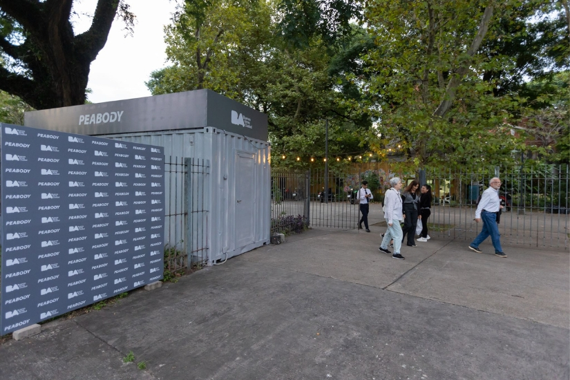

PEABODY PONE EN VALOR EL ANFITEATRO DEL PARQUE CENTENARIO
Con una inversión de 20 millones de pesos, resultante del convenio trazado entre Peabody y el Ministerio de Cultura, el “Anfi” será renovado a partir de mejoras en la infraestructura y tecnología de última generación para ofrecer espectáculos de calidad internacional para todos los vecinos de la Ciudad La transformación podrá vivenciarse a partir de marzo 2024, con la reinauguración del espacio.
Buenos Aires, diciembre 2023.- El Anfiteatro del Parque Centenario será renovado a partir de una acuerdo trazado entre la reconocida marca de electrodomésticos Peabody y el Ministerio de Cultura de la Ciudad de Buenos Aires.
Esta alianza se enmarca en la Ley de Patrocinio porteña y tiene por objetivo beneficiar a vecinos y público en general, tratándose de uno de los espacios públicos más prestigiosos de Buenos Aires, vinculados con la música y las artes escénicas. La puesta a punto y revitalización integral del “Anfi”, ubicado en el barrio de Caballito, incluye una contribución de $ 20.000.000, que incluye mejoras en las condiciones técnicas y estéticas de este espacio que ya cuenta con 70 años de trayectoria, y fomentar la programación de eventos artísticos de calidad para todas las audiencias.
Este acompañamiento, que abarcará un período de dos años, surge en el contexto de celebración del vigésimo aniversario de la marca. La empresa se propone no solo contribuir al embellecimiento y la modernización de las instalaciones del anfiteatro, sino también respaldar activamente el arte argentino y las diversas expresiones culturales de nuestro país, elevando la experiencia para los amantes de la cultura que frecuentan este prestigioso espacio.
Además de su apoyo para mejorar la infraestructura, Peabody se compromete a enriquecer la experiencia cultural mediante la realización de diversas actividades y espectáculos que serán propuestas y organizadas por la misma marca. “Con este patrocinio, reafirmamos una vez más, nuestra misión como marca, que va más allá de la excelencia en productos, buscamos además contribuir activamente en el enriquecimiento cultural de la sociedad argentina”, comentó Dante Choi, Presidente de Goldmund S.A.
Obras que se llevarán adelante y se estiman estarán culminadas para marzo 2024, momento en que re abre sus puertas en espacio:
- Se incorporará equipamiento para las telecomunicaciones internas de las áreas.
- Se sumará equipamiento para perfeccionar el sonido de los espectáculos.
- Se agregarán luminarias al escenario para mejorar la calidad de los espectáculos.
- Se repararán los baños de uso públicos y los de los artistas.
- Se pondrá en valor la fachada de las gradas, pasillos de paso y la cartelería externa del Anfi.
- Se sumarán equipos de aire acondicionado a las diferentes áreas de trabajo del personal.
Condiciones actuales
Cuenta con capacidad para 1640 espectadores y un escenario de 18 por 12 metros más foso de orquesta de 18 por 5 metros. Posee una parrilla de luces de 9 metros de altura, pantalla de proyección de 17 por 7 metros (front y back) y cabina de sonido e iluminación en el FOH. Además, posee depósitos, cuatro camarines VIP y dos generales e incluso con un taller bajo el escenario para el personal escenotécnico, dos puentes de maniobra de cada lado y 6 telones con apertura central. Por fuera de lo que es escenografía, en este espacio también conviven las oficinas de administración y técnica; sistema de seguridad contra incendios y baños públicos para mujeres, hombres y discapacitados.
A diferencia del Anfiteatro original, cuyo escenario miraba al lago, y del escenario provisorio instalado a comienzos del período democrático, el actual Anfiteatro es una construcción totalmente integrada al Parque. Su ingreso es por la calle Lillo y su intersección con Leopoldo Marechal.
Historia
El edificio original se inauguró el 25 de marzo de 1953 bajo el nombre Anfiteatro “Eva Perón”, siguiendo la idea original de Eva, de realizar en su escenario las temporadas de verano del Teatro Colón, para que su alcance sea masivo. La primera función fue la ópera “Aída” de Giuseppe Verdi, la misma que inauguró el Teatro Colón en 1908 y las 10 mil butacas de platea estaban colmadas.
Se ubica en el predio de Parque Centenario, el cual fue diseñado por el prestigioso paisajista Carlos Thays e inaugurado a principios del siglo pasado, para celebrar los cien años de la Patria. Es además el pulmón verde más grande de Caballito: el barrio más densamente poblado de la Ciudad, con 200 mil habitantes.
El auditorio era un ámbito escénico abierto para más de diez mil personas, con graderías en abanico y un escenario conformado por tres arcos parabólicos. La obra, construida casi enteramente en madera, guardaba una cuidadosa relación con la arboleda del parque y su entorno.
Desde sus orígenes, se presentaron espectáculos de todos los géneros y para todo el público. En 1959, sufrió un incendio. Con el advenimiento de la democracia se lo reconstruyó de manera transitoria con el esfuerzo de los propios trabajadores. Contaba con un escenario provisorio, para dar lugar a numerosas presentaciones artísticas que volvieron a convocar amplias multitudes en el espacio público.
El martes 9 de junio de 2009 se re-inauguró el Anfiteatro cuando el Ministerio de Cultura de Buenos Aires invita, a través de la Dirección General de Música, a todos los vecinos y vecinas de la ciudad a participar de un concierto de la Banda Sinfónica de la Ciudad de Buenos Aires. Este fue el inicio del nuevo Anfiteatro de Parque Centenario.
En cuanto a la oferta de programas oficiales, se han presentado espectáculos el Teatro Colón, con sus cuerpos estables: la Orquesta, el Ballet y el Coro estables, además de la Ópera de Cámara, la Orquesta Académica y el Coro de Niños del Instituto Superior de Arte. En el ámbito nacional se presentan regularmente la Orquesta Sinfónica Nacional, el Coro Polifónico, el Ballet Folklórico Nacional, la Banda Nacional de Ciegos, el Coro Nacional de Jóvenes, el Coro Nacional de Niños, la Orquesta de Música Argentina Juan de Dios Filiberto, entre otros. Naturalmente, allí se presentan también los organismos estables de la Dirección General de Música de la Ciudad: la Banda Sinfónica de la Ciudad de Buenos Aires y la Orquesta del Tango de Buenos Aires.
En el plano de los emprendimientos privados e independientes, sería imposible enumerar la totalidad de las propuestas que se han presentado en el escenario del Anfiteatro tanto de música, danza, teatro y multiplicidad de manifestaciones artísticas tanto profesionales como vocaciones (talleres del Programa Cultural en Barrios, Promoción Cultural, Colectividades, etcétera).
Cualquier espectáculo en El ANFI es siempre una verdadera fiesta de la cultura ya que suma al proyecto artístico la relación con la naturaleza. Las personas que habitualmente recorren el Parque Centenario se ven tentadas de participar de las actividades gratuitas y al aire libre. Esto lo vuelve un polo cultural con la música como epicentro, cuya calidad acústica, comodidades y ubicación geográfica lo vuelve un orgullo para los habitantes de la ciudad.
